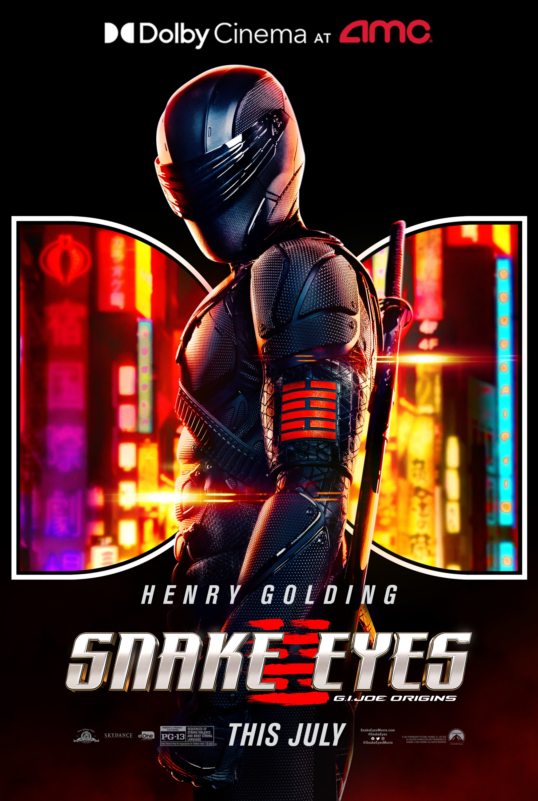

A karakterről
Bevezetés
A Snake Eyes (más néven Snake-Eyes ) egy kitalált karakter a GI Joe: A Real American Hero játékvonalból, képregényekből és animációs sorozatokból, amelyet Larry Hama készített . A GI Joe Team egyik eredeti és legnépszerűbb tagja , és leginkább Scarlett-lel és Storm Shadow-val való kapcsolatairól ismert . Snake Eyes a GI Joe: A Real American Hero franchise egyik legkiemelkedőbb szereplője , aki a kezdetektől fogva a franchise minden sorozatában feltűnt. Ray Park alakítja a 2009-es GI Joe: The Rise of Cobra című élőszereplős filmben és a GI Joe: Retaliation 2013-as folytatásában . Henry Golding alakítja a 2021-es újraindító Snake Eyes: GI Joe Origins címszereplőjét .
A karakterről
A Snake Eyes a GI Joe Team tagjának kódneve. Ő a csapat eredeti kommandósa , és a személyes életével és katonai szolgálatával kapcsolatos történetek és információk nagy része, beleértve a születési nevét, születési helyét és szolgálati számát , titkos vagy szigorúan titkos maradt származásának és katonai karrierjének minden ábrázolása során. . Csak a rendfokozata/besorolása ismert (eredetileg US Army Sergeant/E-5 , végül elérte az első osztályú/E-7 őrmestert, mielőtt azt is minősítettnek minősítették volna), elsődleges katonai szakterülete a gyalogság, és másodlagos katonai szakterület a kézi harcoktató . Snake Eyes a vietnami Military Assistance Command (MACV) Felderítő Iskolában (Nha Trang) képezte ki , és hosszú távú felderítő járőrnél (LRRP) szolgált Délkelet-Ázsiában a Stalkerrel és a Storm Shadow-val , végül otthagyta a szolgálatot tanulni. harcművészetek Storm Shadow Arashikage nindzsa klánjával. Fúróőrmesteri kiképzésen vett részt , az Egyesült Államok Hadseregének egykori különleges alakulatai és a Delta Force operátora. Múltjáról nagyon keveset tudunk. Alapvetően mind a katonai karrierjével, mind a személyes életével kapcsolatos összes hírszerzési információ, beleértve a születési nevét , születési helyét és gyermekkorát, minősített vagy szigorúan titkosnak minősült a titkos katonai műveletek miatt, amelyekben részt vett. Snake Eyes szigorú önmegtagadó és elzárkózó életet élt a High Sierrában egy Timber nevű, házi kedvenc farkassal, amikor beszervezték a GI Joe Teambe. Szakértője a NATO és a Varsói Szerződés összes kézi lőfegyverének, és fekete övei vannak 12 különböző harcrendszerben, beleértve a karate , judo , jujutsu , kung-fu , taekwondo , muay Thai , ninjutsu , Krav Maga , Savate , Silat , Jeet Kune Do , és Kobudo . Magasan jártas az éles fegyverek, különösen a japán kard és a tüskés lövészárokkés használatában , de ugyanolyan képzettséggel rendelkezik és hajlandó is használni lőfegyvereket és robbanóanyagokat. Snake Eyes egy nindzsamester , aki halk mozgásban van, és ritkán támaszkodik egyetlen fegyverkészletre a többiek kizárásával. A GI Joe egyik első küldetése során Snake Eyes arca súlyosan eltorzult egy helikopter robbanásában. Azóta Snake Eyes kiterjedt plasztikai műtéten esett át a sérülések helyreállítására, de hangszálait nem lehet helyrehozni. Általában fekete bodyt visel, valamint balaklavát és arcellenzőt, hogy eltakarja az arcát. Amikor kiveszi az egyenruháját, Snake Eyes egy fehér férfi, sportos testalkatú, szőke hajú és kék szemű. Snake Eyesről a legtöbb folytonosságból kiderült, hogy romantikus kapcsolatban áll Scarlett csapattársával . Számos tanítványa is volt, köztük Kamakura , Tiger Claw és Jinx . Személyes idézete: "Mozdulj a széllel, és soha nem fognak meghallani."